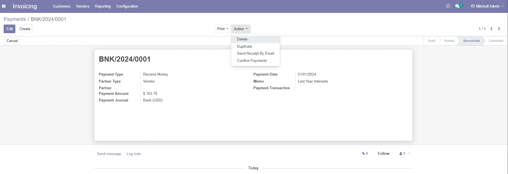

This module enables user to delete a payment record. Payment record cannot be remove if account entry has received the sequence number. This module reset the field "move_name" before unlink().
Warning! This action leaves a hole in journal entries sequence. This issue is forbidden in some countries.
Questo modulo permette all'utente di eliminare una registrazione di pagamento. Una registrazione di pagamento non può essere rimossa se la relativa registrazione contabile ha già ricevuto il numero di protocollo. Questo modulo azzera il campo "move_name" prima dell'eliminazione.
Attenzione! Questa azione genera un salto di numerazione contabile. Questa situazione potrebbe essere invalidante per una contabilità fiscale.
Activate developer mode:
Invoicing » Configuration » Journals » JOURNAL » Edit » Allow Cancelling Entries
In modalità sviluppatore:
Fatturazione » Configurazione » Registri » REGISTRO » Modifica » Consentire annullamento registrazioni
Remove payment:
Invoicing » Vendors » Payments » PAYMENT » Action » Delete
Invoicing » Customers » Payments » PAYMENT » Action » Delete
Per eliminare una registrazione di pagamento:
Fatturazione » Fornitori » Pagamenti » PAGAMENTO » Azione » Elimina
Fatturazione » Clienti » Pagamenti » PAGAMENTO » Azione » Elimina